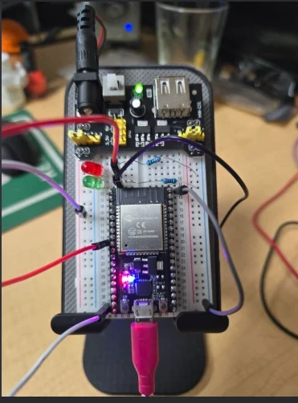

ESP32 breadboard prototype
My own bench setup: an ESP32 development board on a breadboard with a breadboard power module, two indicator LEDs, resistors and jumper wiring, connected over USB.

A schematic can be correct on paper and still fail on the bench. Testing the actual hardware and firmware together is how integration problems, wrong component choices and timing issues are found cheaply.
I implement your circuit on a breadboard, connect the sensors, peripherals and power, upload the firmware and validate that the product does what it should. The PCB is only designed once this works.
Building the circuit with the real microcontroller, sensors and peripherals from your requirements.
Interfacing sensors, actuators, displays and communication modules with the controller and with each other, including power connections.
Functional testing of the assembled hardware, component verification and communication testing.
Uploading the firmware and working through hardware/software integration issues.
Checking sensors and actuators against the product requirements before moving to PCB engineering.
Hardware troubleshooting and firmware debugging until the required functionality is validated.
Projects are quoted by scope after I review your requirements. There are no fixed packages.
My own bench setup: an ESP32 development board on a breadboard with a breadboard power module, two indicator LEDs, resistors and jumper wiring, connected over USB.

A board already deployed across 30+ units had four field problems: high power draw, startup inrush, unstable load cell readings and uneven LED brightness. I diagnosed the root cause of each and delivered a corrected KiCad revision and a repair guide.
On the parcel-tracking system the client supplied working prototypes, so the breadboard stage was theirs and I worked from the validated design. The breadboard photo on this page is my own ESP32 bench prototype, not a client project.
Yes. After the firmware is written I build the circuit on a breadboard with the actual components, load the firmware and test and debug it before moving to the schematic and PCB. If you already have a working prototype, I start from it instead.
Yes. My approach is firmware-first: I make the product work on real hardware before committing to a board. That way the PCB is designed around behaviour that has already been validated, not around assumptions.
You do. Clients either supply the components or cover the purchasing cost after approval. I do not purchase components at my own expense, and I do not ship physical products.
Describe your product or send the requirements. I will review them and come back with the next step.
Or reach me on Fiverr, Upwork or WhatsApp. I usually reply within a day.